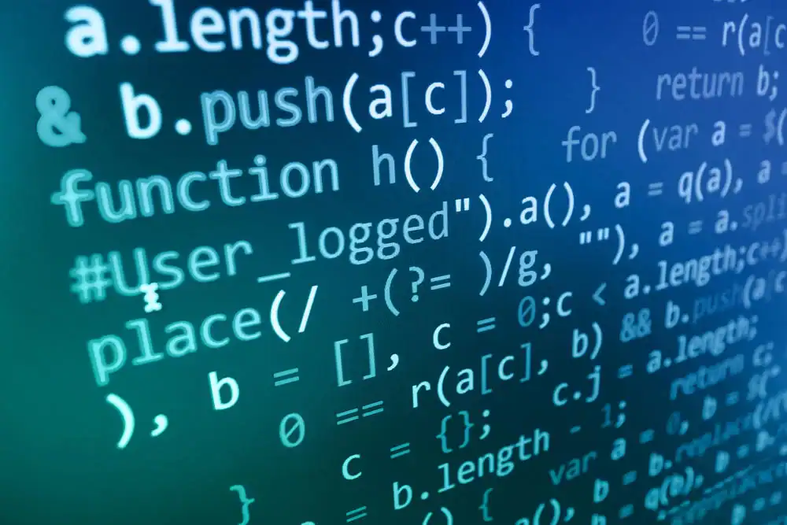

Seja bem-vindo ao mundo da Tecnologia
nesta página você entenderá mais sobre o mundo da computação
Principais Conceitos
Nesta página, o visitante aprenderá os principais conceitos que formam a base da Computação. O conteúdo
será
dividido em tópicos para facilitar a compreensão, mesmo para quem está começando na área.
O visitante verá:
- Hardware: componentes físicos do computador;
- Software: programas e sistemas utilizados nos dispositivos;
- Redes: comunicação entre computadores e dispositivos;
- Algoritmos: sequência de instruções utilizada para solucionar problemas.

Carreiras na TI
Nesta página,
o visitante conhecerá
algumas das principais
profissões e áreas de atuação
dentro da Tecnologia da Informação.
A ideia é mostrar que a área de TI
possui diversas possibilidades profissionais.
O visitante verá:
- Desenvolvimento de software;
- Análise de dados
- Segurança da informação;
- Redes e infraestrutura;
- Como ingressar
Contato
Nesta página,
o visitante poderá entrar
em contato com os responsáveis
pelo site para enviar dúvidas,
sugestões ou comentários.
O visitante verá:
- Campo para nome;
- Campo para e-mail;
- Campo para assunto;
- Campo para escrever uma mensagem;
- Botão para enviar o formulário.